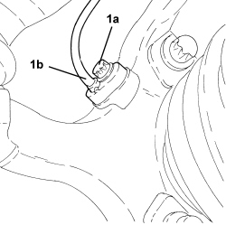
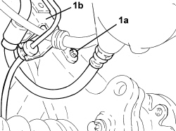
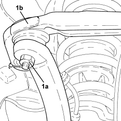
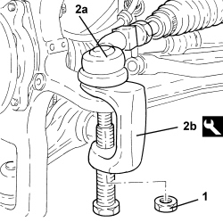
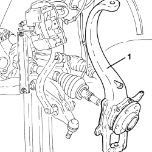
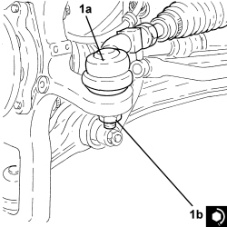
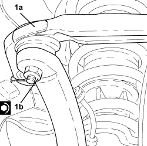
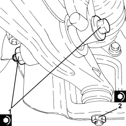
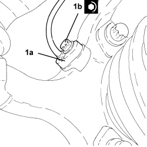
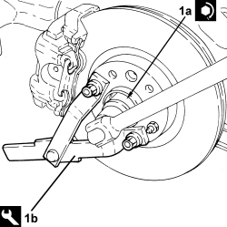

4450C10 FRONT STEERING KNUCKLE (ONE), L/H OR R/H COMPLETE WITH WHEEL HUB - R+R WITH WHEEL REMOVED - CHECK WHEEL GEOMETRY SEPARATELY
- Path
- Procedures > 44 SUSPENSION AND WHEELS > 4450 HUBS AND WHEELS > 4450C FRONT WHEEL HUBS > 4450C10 FRONT STEERING KNUCKLE (ONE), L/H OR R/H COMPLETE WITH WHEEL HUB - R+R WITH WHEEL REMOVED - CHECK WHEEL GEOMETRY SEPARATELY
- Kind
- repair procedure (removal / refitting; the operation number is the code)
- Applies to
- all engines; all production periods
- Interactive page
- https://sloeber94.github.io/elrnDB-aBrrSpdr/en/#/946002231
Applies to: all engines; all production periods
 Removing
Removing
 Refitting
Refitting- Position the vehicle on a lift.
Op. 4450B02 LEFT FRONT WHEEL - R.R
1. Remove the two stakings and undo the nut (1a) securing the front wheel hub to the driveshaft using the tool (1b) for counter-torque.

Applies to: all engines; all production periods
Op. 3310A57 FRONT BRAKE CALIPER BRACKET (ONE), LEFT OR RIGHT - R.R
Op. 3310A48 FRONT BRAKE DISC (ONE), LEFT OR RIGHT - R.R
Op. 3310A59 FRONT BRAKE DISC GUARD (ONE), LEFT OR RIGHT- R.R
1. Unscrew bolt (1a) and remove the wheel rpm sensor (1b) from the front steering knuckle and move aside.

Applies to: all engines; all production periods
1. Undo the bolt (1a) and remove the bracket (1b) supporting the pipes and electrical wires.

Applies to: all engines; all production periods
1. Undo the nut securing the front suspension lower wishbone to the wheel steering knuckle
2. Undo the bolt securing the lower fork connecting the front suspension damper to the lower wishbone, lower wishbone side.
- Disconnect the lower wishbone from the front steering knuckle.

Applies to: all engines; all production periods
1. Undo the nut (1a) and disconnect the front suspension upper wishbone (1b) from the front steering knuckle.

Applies to: all engines; all production periods
1. Undo the nut fixing the steering rod to the front steering knuckle.
2. Disconnect the steering rod (2a) from the front steering knuckle using the tool (2b).

Applies to: all engines; all production periods
1. Remove the front steering knuckle complete with wheel hub.

Applies to: all engines; all production periods
Refitting
Removing- Place the front steering knuckle complete with wheel hub in its housing.
1. Connect the steering rod (1a) to the front steering knuckle and tighten nut (1b) to the specified torque.

Applies to: all engines; all production periods
1. Connect the front suspension upper wishbone (1a) to the front steering knuckle and tighten the nut (1b) to the recommended torque.

Applies to: all engines; all production periods
- Connect the lower wishbone to the front steering knuckle.
1. Tighten the bolt securing the lower fork connecting the front suspension shock absorber to the lower wishbone, lower wishbone side.
2. Tighten the nut securing the front suspension lower wishbone to the wheel steering knuckle

Applies to: all engines; all production periods
- Replace the bracket supporting the pipes and electrical wiring back in its housing and secure it using the bolt.
1. Position the wheel rpm sensor (1a) in its housing on the front steering knuckle and secure it tightening the bolt (1b) to the recommended torque.

Applies to: all engines; all production periods
Op. 3310A59 FRONT BRAKE DISC GUARD (ONE), LEFT OR RIGHT- R.R
Op. 3310A48 FRONT BRAKE DISC (ONE), LEFT OR RIGHT - R.R
Op. 3310A57 FRONT BRAKE CALIPER BRACKET (ONE), LEFT OR RIGHT - R.R
1. Tighten a new nut (1a) securing the front drive shaft to the wheel hub using tool (1b) for countertorque.

Applies to: all engines; all production periods
- Stake the nut collar twice.